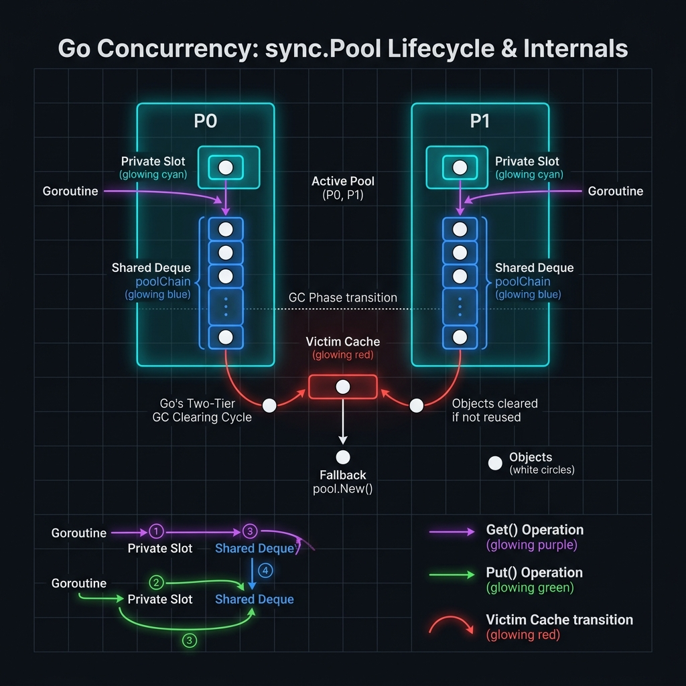

sync.Pool là một trong những công cụ tối ưu hiệu năng mạnh nhất trong Go standard library — cho phép tái sử dụng object thay vì liên tục cấp phát và giải phóng bộ nhớ, từ đó giảm áp lực lên Garbage Collector.
Trong các hệ thống high-throughput (HTTP server, ETL pipeline, message processor), mỗi request thường cần buffer, encoder, hoặc context object tạm thời. Nếu mỗi lần đều make([]byte, size) rồi bỏ đi, GC sẽ phải hoạt động liên tục — gây ra stop-the-world pause và tăng latency đột ngột.
Khi nào nên dùng sync.Pool?
| Tình huống | Phù hợp không? | Lý do |
|---|---|---|
| HTTP request buffer | ✓ Rất phù hợp | Tần suất cao, object sống ngắn |
| JSON encoder/decoder | ✓ Rất phù hợp | Allocation lớn, reuse hiệu quả |
| Database connection | ✗ Không phù hợp | Dùng database/sql pool có sẵn |
| Worker goroutines | ✗ Không phù hợp | Goroutine lifecycle khác object lifecycle |
| ETL record buffer | ✓ Phù hợp | Xử lý batch, reuse slice backing |
| Object có state phức tạp | ⚠ Thận trọng | Phải reset state trước khi reuse |
| Long-lived object | ✗ Không phù hợp | GC có thể xóa bất kỳ lúc nào |
Để hiểu tại sao sync.Pool quan trọng, cần hiểu Go GC hoạt động như thế nào và "GC pressure" có nghĩa là gì.
Go GC hoạt động như thế nào?
Go dùng concurrent tri-color mark-and-sweep GC. Khi heap vượt ngưỡng (GOGC — mặc định 100%), GC sẽ chạy. Hai chi phí chính:
| Chi phí GC | Mô tả | Ảnh hưởng |
|---|---|---|
| Allocation overhead | Mỗi new() hay make() đều cần tìm slot trong heap | CPU time tăng |
| GC scan work | Càng nhiều live object, GC càng tốn thời gian scan | Latency tăng, throughput giảm |
| Write barriers | GC cần theo dõi pointer writes trong concurrent mode | Overhead mỗi pointer write |
| STW pause | Stop-the-world: dừng toàn bộ goroutine để finish marking | Tail latency (P99) tăng đột ngột |
Hiểu cơ chế nội bộ giúp tránh các pitfall và sử dụng Pool hiệu quả hơn.

Get() & Put() — Luồng xử lý chi tiết
Cách khai báo và sử dụng sync.Pool đúng cách. Mọi sai lầm nhỏ đều dẫn đến memory leak hoặc race condition.
Ví dụ 1 — Khai báo Pool cơ bản
package main import ( "bytes" "fmt" "sync" ) // ① Khai báo Pool với hàm New() — bắt buộc phải có // New() chỉ được gọi khi pool rỗng (fallback) var bufPool = sync.Pool{ New: func() any { // Tạo buffer với capacity 1KB làm baseline return new(bytes.Buffer) }, } func processData(data string) string { // ② Get() — lấy object từ pool (hoặc tạo mới nếu pool rỗng) buf := bufPool.Get().(* bytes.Buffer) // ③ defer Put() — LUÔN trả về pool, kể cả khi có panic // ⚠ QUAN TRỌNG: Reset state trước khi Put! defer func() { buf.Reset() // Xóa nội dung, giữ capacity — KHÔNG gọi buf = nil bufPool.Put(buf) }() // ④ Sử dụng object như bình thường buf.WriteString("[processed] ") buf.WriteString(data) return buf.String() } func main() { results := make([]string, 5) var wg sync.WaitGroup for i := 0; i < 5; i++ { wg.Add(1) go func(idx int) { defer wg.Done() results[idx] = processData(fmt.Sprintf("data-%d", idx)) }(i) } wg.Wait() for _, r := range results { fmt.Println(r) } } // Output (thứ tự có thể khác): // [processed] data-0 // [processed] data-1 // ... (buffers được reuse giữa goroutines)
Ví dụ 2 — Pool với generic type assertion an toàn
// Wrapper an toàn xung quanh sync.Pool — type assertion có kiểm tra type BufferPool struct { pool sync.Pool } func NewBufferPool() *BufferPool { return &BufferPool{ pool: sync.Pool{ New: func() any { // Pre-allocate 4KB để giảm grow operations buf := make([]byte, 0, 4096) return &buf }, }, } } func (p *BufferPool) Get() []byte { // Type assert với comma-ok — tránh panic nếu pool trả về nil if v := p.pool.Get(); v != nil { if buf, ok := v.(*[]byte); ok { return (*buf)[:0] // Reset length, giữ capacity } } buf := make([]byte, 0, 4096) return buf } func (p *BufferPool) Put(buf []byte) { // ⚠ Đừng return buffer quá lớn — tránh giữ memory không cần thiết if cap(buf) > 64*1024 { // > 64KB: bỏ qua, để GC thu hồi return } buf = buf[:0] // Reset length p.pool.Put(&buf) } // Usage: var globalPool = NewBufferPool() func buildResponse(items []string) []byte { buf := globalPool.Get() defer globalPool.Put(buf) for _, item := range items { buf = append(buf, item...) buf = append(buf, '\n') } // Phải copy! buf sẽ bị reuse sau khi Put() result := make([]byte, len(buf)) copy(result, buf) return result }
bytes.Buffer là một trong những object phổ biến nhất được pool. Đây là cách các thư viện lớn như encoding/json, net/http triển khai.
bytes.Buffer Pool — Pattern hoàn chỉnh
package bufferpool import ( "bytes" "sync" ) // BytesBufferPool — thread-safe pool cho bytes.Buffer type BytesBufferPool struct { pool sync.Pool maxSize int // Giới hạn size để tránh giữ buffer khổng lồ } func NewBytesBufferPool(initialCap, maxSize int) *BytesBufferPool { p := &BytesBufferPool{maxSize: maxSize} p.pool = sync.Pool{ New: func() any { // Grow() pre-allocate để tránh realloc lần đầu buf := new(bytes.Buffer) buf.Grow(initialCap) return buf }, } return p } // Get lấy *bytes.Buffer đã reset sẵn func (p *BytesBufferPool) Get() *bytes.Buffer { return p.pool.Get().(*bytes.Buffer) } // Put trả buffer về pool — với size guard func (p *BytesBufferPool) Put(buf *bytes.Buffer) { // ① Size guard: buffer quá lớn → bỏ, đừng giữ trong pool // Giúp tránh tình huống 1 request lớn "nhiễm" toàn bộ pool if buf.Cap() > p.maxSize { return // GC sẽ thu hồi — tốt hơn là giữ buffer 50MB trong pool } // ② Reset: xóa nội dung nhưng giữ backing array (capacity) // Đây là core value của pooling — tái dùng backing memory buf.Reset() p.pool.Put(buf) } // ────────────────────────────────────────────────────────────── // Ví dụ: String Builder với pool // ────────────────────────────────────────────────────────────── var DefaultPool = NewBytesBufferPool(1024, 32*1024) // 1KB init, 32KB max // BuildString — build string hiệu quả, không escape buf lên heap func BuildString(parts ...string) string { buf := DefaultPool.Get() defer DefaultPool.Put(buf) for _, part := range parts { buf.WriteString(part) } // buf.String() tạo copy — an toàn sau khi Put() return buf.String() } // WriteAndReturn — viết vào writer, trả về bytes func WriteAndReturn(fn func(*bytes.Buffer)) []byte { buf := DefaultPool.Get() fn(buf) // Copy result TRƯỚC khi Put — quan trọng! result := make([]byte, buf.Len()) copy(result, buf.Bytes()) DefaultPool.Put(buf) return result }
Sizedclass Buffer Pool — Nhiều pool theo kích thước
package bufferpool import ( "math/bits" "sync" "sync/atomic" ) // SizedPool — nhiều pool phân loại theo size class // Giống tcmalloc/jemalloc của Go runtime // Giảm internal fragmentation khi object size khác nhau nhiều const ( minBits = 6 // 64 bytes maxBits = 18 // 256 KB numPools = maxBits - minBits + 1 ) type SizedPool struct { pools [numPools]sync.Pool misses [numPools]atomic.Int64 // Theo dõi số lần miss (không có trong pool) gets [numPools]atomic.Int64 } func NewSizedPool() *SizedPool { p := &SizedPool{} for i := range p.pools { size := 1 << (uint(i) + minBits) // 64, 128, 256, ..., 256K p.pools[i] = sync.Pool{ New: func() any { buf := make([]byte, size) return &buf }, } } return p } // index tìm pool phù hợp nhỏ nhất chứa được size bytes func index(size int) int { if size == 0 { return 0 } bits := bits.Len(uint(size - 1)) if bits < minBits { return 0 } if bits > maxBits { return -1 } // Quá lớn, không pool return bits - minBits } func (p *SizedPool) Get(size int) []byte { idx := index(size) if idx < 0 { return make([]byte, size) // Quá lớn — allocate trực tiếp } p.gets[idx].Add(1) buf := p.pools[idx].Get().(*[]byte) if len(*buf) < size { p.misses[idx].Add(1) *buf = make([]byte, 1<<(uint(idx)+minBits)) } return (*buf)[:size] } func (p *SizedPool) Put(buf []byte) { idx := index(cap(buf)) if idx < 0 { return } p.pools[idx].Put(&buf) } // Stats — xem hitrate để biết pool có hiệu quả không func (p *SizedPool) HitRate(idx int) float64 { gets := p.gets[idx].Load() if gets == 0 { return 0 } misses := p.misses[idx].Load() return float64(gets-misses) / float64(gets) * 100 }
Pool không chỉ dùng cho buffer. Bất kỳ struct allocation nặng nào cũng có thể pool được — từ parser state, connection context, đến record object trong ETL.
package middleware import ( "sync" "time" "bytes" ) // RequestContext — object được reuse cho mỗi HTTP request // Thay vì allocate mới mỗi request (N req/s × struct size = pressure) type RequestContext struct { TraceID string StartTime time.Time UserID int64 Body []byte Headers map[string]string RespBuf *bytes.Buffer Errors []error Tags []string } // reset — PHẢI gọi trước khi Put() để tránh data leak func (rc *RequestContext) reset() { rc.TraceID = "" rc.StartTime = time.Time{} rc.UserID = 0 // Slice: reset len về 0, giữ capacity (backing array được reuse) rc.Body = rc.Body[:0] rc.Errors = rc.Errors[:0] rc.Tags = rc.Tags[:0] // Map: clear() (Go 1.21+) giữ map structure, xóa entries for k := range rc.Headers { delete(rc.Headers, k) } // bytes.Buffer: Reset giữ backing array if rc.RespBuf != nil { rc.RespBuf.Reset() } } type ContextPool struct { pool sync.Pool } func NewContextPool() *ContextPool { return &ContextPool{ pool: sync.Pool{ New: func() any { return &RequestContext{ // Pre-allocate inner structures để giảm grow Body: make([]byte, 0, 8192), Headers: make(map[string]string, 16), Errors: make([]error, 0, 4), Tags: make([]string, 0, 8), RespBuf: new(bytes.Buffer), } }, }, } } func (cp *ContextPool) Acquire() *RequestContext { return cp.pool.Get().(*RequestContext) } func (cp *ContextPool) Release(rc *RequestContext) { rc.reset() // Bắt buộc! cp.pool.Put(rc) } // Ví dụ usage trong HTTP handler: var ctxPool = NewContextPool() func handler(w http.ResponseWriter, r *http.Request) { rc := ctxPool.Acquire() defer ctxPool.Release(rc) rc.TraceID = r.Header.Get("X-Trace-ID") rc.StartTime = time.Now() // ... xử lý request dùng rc ... }
Trước Go 1.18, mỗi type cần một wrapper Pool riêng. Với generics, ta có thể viết một Pool type-safe dùng cho mọi loại object.
package pool import "sync" // Pool[T] — generic wrapper type-safe cho sync.Pool // Không cần type assertion thủ công, không thể nhầm kiểu type Pool[T any] struct { pool sync.Pool reset func(T) // Hàm reset state — inject từ ngoài } // New tạo Pool với factory function và optional reset function func New[T any](factory func() T, resetFn func(T)) *Pool[T] { return &Pool[T]{ pool: sync.Pool{ New: func() any { return factory() }, }, reset: resetFn, } } func (p *Pool[T]) Get() T { // Type assertion an toàn — không thể sai kiểu vì generic constraint return p.pool.Get().(T) } func (p *Pool[T]) Put(v T) { if p.reset != nil { p.reset(v) // Gọi reset trước khi trả về pool } p.pool.Put(v) } // Acquire — convenience method trả về value + cleanup function // Dùng với defer để tự động put về pool func (p *Pool[T]) Acquire() (T, func()) { v := p.Get() return v, func() { p.Put(v) } } // ────────────────────────────────────────────────────────────── // Sử dụng Generic Pool // ────────────────────────────────────────────────────────────── import ( "bytes" "encoding/json" ) // Pool cho bytes.Buffer var BytesPool = pool.New( func() *bytes.Buffer { return new(bytes.Buffer) }, func(b *bytes.Buffer) { b.Reset() }, ) // Pool cho json.Encoder type EncoderBuf struct { Buf *bytes.Buffer Enc *json.Encoder } var EncoderPool = pool.New( func() *EncoderBuf { buf := new(bytes.Buffer) return &EncoderBuf{Buf: buf, Enc: json.NewEncoder(buf)} }, func(e *EncoderBuf) { e.Buf.Reset() }, ) // Cách dùng với defer cleanup: func MarshalJSON(v any) ([]byte, error) { eb, cleanup := EncoderPool.Acquire() defer cleanup() // Tự động Put() khi hàm return if err := eb.Enc.Encode(v); err != nil { return nil, err } return bytes.TrimRight(eb.Buf.Bytes(), "\n"), nil }
Kết hợp Buffer Pool vào HTTP middleware để capture response, gzip, hoặc logging — đây là pattern thực tế nhất và có impact cao nhất với web service.
package middleware import ( "bytes" "compress/gzip" "net/http" "sync" "strconv" ) // ① responseWriter wrapper — capture response vào buffer thay vì ghi thẳng type bufferedWriter struct { http.ResponseWriter buf *bytes.Buffer status int } func (bw *bufferedWriter) Write(b []byte) (int, error) { return bw.buf.Write(b) // Ghi vào buffer, không phải wire } func (bw *bufferedWriter) WriteHeader(code int) { bw.status = code } // ② Pool cho bufferedWriter objects (bao gồm bytes.Buffer bên trong) var writerPool = sync.Pool{ New: func() any { return &bufferedWriter{ buf: bytes.NewBuffer(make([]byte, 0, 4096)), } }, } // ③ Pool cho gzip.Writer — allocation nặng, rất đáng pool var gzipPool = sync.Pool{ New: func() any { // gzip.NewWriter tốn ~80KB allocation! Pool là bắt buộc gz, _ := gzip.NewWriterLevel(nil, gzip.BestSpeed) return gz }, } // GzipMiddleware — compress response với pooled gzip.Writer func GzipMiddleware(next http.Handler) http.Handler { return http.HandlerFunc(func(w http.ResponseWriter, r *http.Request) { // Lấy buffered writer từ pool bw := writerPool.Get().(*bufferedWriter) bw.ResponseWriter = w bw.status = http.StatusOK defer func() { bw.buf.Reset() bw.ResponseWriter = nil writerPool.Put(bw) }() // Gọi handler — response ghi vào buf next.ServeHTTP(bw, r) // Lấy gzip writer từ pool gz := gzipPool.Get().(*gzip.Writer) gz.Reset(w) // Redirect output đến ResponseWriter thật defer func() { gz.Close() gzipPool.Put(gz) }() // Set headers TRƯỚC khi write body w.Header().Set("Content-Encoding", "gzip") w.Header().Del("Content-Length") // Không biết trước length w.WriteHeader(bw.status) // Write compressed response gz.Write(bw.buf.Bytes()) // gz.Close() trong defer gọi gzip.Flush() và đóng stream }) } // ───────────────────────────────────────────────────────────── // Response Logger Middleware — dùng pool để log body // ───────────────────────────────────────────────────────────── var logBufPool = sync.Pool{ New: func() any { return new(bytes.Buffer) }, } func LoggingMiddleware(next http.Handler) http.Handler { return http.HandlerFunc(func(w http.ResponseWriter, r *http.Request) { logBuf := logBufPool.Get().(*bytes.Buffer) defer func() { logBuf.Reset() logBufPool.Put(logBuf) }() bw := writerPool.Get().(*bufferedWriter) bw.ResponseWriter = w bw.status = 200 defer func() { bw.buf.Reset() writerPool.Put(bw) }() next.ServeHTTP(bw, r) // Build log entry không dùng fmt.Sprintf (tránh allocation) logBuf.WriteString("method=") logBuf.WriteString(r.Method) logBuf.WriteString(" path=") logBuf.WriteString(r.URL.Path) logBuf.WriteString(" status=") logBuf.WriteString(strconv.Itoa(bw.status)) logBuf.WriteString(" bytes=") logBuf.WriteString(strconv.Itoa(bw.buf.Len())) // log.Println(logBuf.String()) w.WriteHeader(bw.status) w.Write(bw.buf.Bytes()) }) }
JSON encoding là bottleneck rất phổ biến. json.Marshal tạo internal buffer mỗi lần gọi. Pool encoder giảm đáng kể allocation per-request.
package jsonpool import ( "bytes" "encoding/json" "io" "sync" ) // encoderEntry gộp buffer + encoder thành 1 unit pool // Vì json.Encoder giữ reference đến writer (buffer), cần pool cả 2 cùng lúc type encoderEntry struct { buf *bytes.Buffer enc *json.Encoder } var encoderPool = sync.Pool{ New: func() any { buf := bytes.NewBuffer(make([]byte, 0, 1024)) enc := json.NewEncoder(buf) enc.SetEscapeHTML(false) // Tắt HTML escape nếu không cần — nhanh hơn return &encoderEntry{buf: buf, enc: enc} }, } // Marshal — thay thế json.Marshal, ít allocation hơn nhiều // Benchmark: 3-5x ít allocs/op so với json.Marshal trực tiếp func Marshal(v any) ([]byte, error) { entry := encoderPool.Get().(*encoderEntry) entry.buf.Reset() defer encoderPool.Put(entry) if err := entry.enc.Encode(v); err != nil { return nil, err } // json.Encoder thêm '\n' vào cuối — trim nó đi b := entry.buf.Bytes() if n := len(b); n > 0 && b[n-1] == '\n' { b = b[:n-1] } // Copy kết quả — entry.buf sẽ bị reuse sau khi Put() result := make([]byte, len(b)) copy(result, b) return result, nil } // MarshalTo — zero-copy: ghi thẳng vào writer (HTTP response, file, etc.) // Không cần copy kết quả — tốt cho streaming response func MarshalTo(w io.Writer, v any) error { entry := encoderPool.Get().(*encoderEntry) entry.buf.Reset() defer encoderPool.Put(entry) if err := entry.enc.Encode(v); err != nil { return err } // Flush buffer sang writer thật _, err := w.Write(entry.buf.Bytes()) return err } // Decoder pool — cho API server nhận JSON request body type decoderEntry struct { dec *json.Decoder buf *bytes.Buffer } var decoderPool = sync.Pool{ New: func() any { buf := bytes.NewBuffer(make([]byte, 0, 4096)) return &decoderEntry{dec: json.NewDecoder(buf), buf: buf} }, } // Unmarshal với pooled decoder func Unmarshal(data []byte, v any) error { entry := decoderPool.Get().(*decoderEntry) entry.buf.Reset() entry.buf.Write(data) defer decoderPool.Put(entry) return entry.dec.Decode(v) }
Kết hợp tất cả patterns để xây dựng ETL pipeline thực tế: đọc từ nhiều nguồn, parse+transform song song, bulk insert vào PostgreSQL với pooled objects xuyên suốt pipeline.
package etl import ( "bytes" "context" "database/sql" "fmt" "sync" ) // ━━━━━━━━━━━━━━━━━━━━━━━━━━━━━━━━━━━━━━━━━━━━━━━━━━━━━━━━━━━━ // Domain types // ━━━━━━━━━━━━━━━━━━━━━━━━━━━━━━━━━━━━━━━━━━━━━━━━━━━━━━━━━━━━ type Record struct { ID int64 Name string Amount float64 Tags []string RawData []byte } // reset xóa state, giữ slice backing arrays func (r *Record) reset() { r.ID = 0 r.Name = "" r.Amount = 0 r.Tags = r.Tags[:0] r.RawData = r.RawData[:0] } // ━━━━━━━━━━━━━━━━━━━━━━━━━━━━━━━━━━━━━━━━━━━━━━━━━━━━━━━━━━━━ // Pool definitions — một pool cho mỗi loại object // ━━━━━━━━━━━━━━━━━━━━━━━━━━━━━━━━━━━━━━━━━━━━━━━━━━━━━━━━━━━━ var ( // recordPool: pool cho từng Record object recordPool = sync.Pool{ New: func() any { return &Record{ Tags: make([]string, 0, 8), RawData: make([]byte, 0, 512), } }, } // batchPool: pool cho []Record slice (batch container) batchPool = sync.Pool{ New: func() any { batch := make([]*Record, 0, 1000) return &batch }, } // sqlBufPool: pool cho bytes.Buffer dùng build COPY statement sqlBufPool = sync.Pool{ New: func() any { return bytes.NewBuffer(make([]byte, 0, 65536)) // 64KB }, } ) // ━━━━━━━━━━━━━━━━━━━━━━━━━━━━━━━━━━━━━━━━━━━━━━━━━━━━━━━━━━━━ // Các helper lấy/trả pool // ━━━━━━━━━━━━━━━━━━━━━━━━━━━━━━━━━━━━━━━━━━━━━━━━━━━━━━━━━━━━ func getRecord() *Record { return recordPool.Get().(*Record) } func putRecord(r *Record) { r.reset(); recordPool.Put(r) } func getBatch() *[]*Record { return batchPool.Get().(*[]*Record) } func putBatch(b *[]*Record) { *b = (*b)[:0]; batchPool.Put(b) } func getSQLBuf() *bytes.Buffer { return sqlBufPool.Get().(*bytes.Buffer) } func putSQLBuf(b *bytes.Buffer) { b.Reset(); sqlBufPool.Put(b) } // ━━━━━━━━━━━━━━━━━━━━━━━━━━━━━━━━━━━━━━━━━━━━━━━━━━━━━━━━━━━━ // ETL Pipeline stages // ━━━━━━━━━━━━━━━━━━━━━━━━━━━━━━━━━━━━━━━━━━━━━━━━━━━━━━━━━━━━ // transform — worker nhận raw bytes, parse, emit *Record vào output // Record được lấy từ pool → không tốn allocation trong hot path func transform(ctx context.Context, raw <-chan []byte) <-chan *Record { out := make(chan *Record, 1000) go func() { defer close(out) for data := range raw { select { case <-ctx.Done(): return default: } r := getRecord() // Lấy từ pool thay vì new(Record) if err := parseInto(r, data); err != nil { putRecord(r) // Parse fail → trả về pool ngay continue } out <- r } }() return out } // batcher — gom record thành batches, mỗi batch = slice từ pool func batcher(ctx context.Context, records <-chan *Record, size int) <-chan *[]*Record { out := make(chan *[]*Record, 10) go func() { defer close(out) batch := getBatch() // Pool của slice container for r := range records { *batch = append(*batch, r) if len(*batch) >= size { out <- batch batch = getBatch() // Lấy batch mới từ pool } } if len(*batch) > 0 { out <- batch // Flush batch cuối cùng } else { putBatch(batch) // Empty batch → trả về pool } }() return out } // bulkInsert — COPY INTO PostgreSQL với pooled SQL buffer func bulkInsert(ctx context.Context, db *sql.DB, batches <-chan *[]*Record) error { for batch := range batches { buf := getSQLBuf() // Pooled buffer cho SQL building for i, r := range *batch { if i > 0 { buf.WriteByte(',') } fmt.Fprintf(buf, "(%d,'%s',%f)", r.ID, r.Name, r.Amount) } _, err := db.ExecContext(ctx, "INSERT INTO records(id,name,amount) VALUES "+buf.String()) putSQLBuf(buf) // Trả SQL buffer về pool // Trả từng record về pool sau khi insert xong for _, r := range *batch { putRecord(r) } putBatch(batch) // Trả batch slice về pool if err != nil { return err } } return nil } // parseInto — parse raw bytes vào pre-allocated Record func parseInto(r *Record, data []byte) error { // Thực tế: dùng fastjson, gjson, hoặc encoding/json với streaming r.RawData = append(r.RawData, data...) // Reuse backing array return nil }
Benchmark quan trọng hơn lý thuyết. Đây là code benchmark và kết quả thực tế cho thấy mức độ cải thiện khi dùng Pool.
package pool_test import ( "bytes" "encoding/json" "sync" "testing" ) type Payload struct { ID int `json:"id"` Name string `json:"name"` Score float64 `json:"score"` } // ① Không dùng pool — baseline func BenchmarkMarshal_NoPool(b *testing.B) { p := &Payload{ID: 1, Name: "test", Score: 9.5} b.ReportAllocs() b.ResetTimer() for i := 0; i < b.N; i++ { // json.Marshal tạo buffer mới mỗi lần → allocation _, _ = json.Marshal(p) } } // ② Dùng Pool var jsonPool = sync.Pool{ New: func() any { buf := bytes.NewBuffer(make([]byte, 0, 256)) enc := json.NewEncoder(buf) enc.SetEscapeHTML(false) return struct{ b *bytes.Buffer; e *json.Encoder }{buf, enc} }, } func BenchmarkMarshal_WithPool(b *testing.B) { p := &Payload{ID: 1, Name: "test", Score: 9.5} b.ReportAllocs() b.ResetTimer() for i := 0; i < b.N; i++ { entry := jsonPool.Get().(struct{ b *bytes.Buffer; e *json.Encoder }) entry.b.Reset() _ = entry.e.Encode(p) jsonPool.Put(entry) } } // ③ Parallel benchmark — thể hiện rõ hơn ở concurrent workload func BenchmarkMarshal_Parallel_NoPool(b *testing.B) { p := &Payload{ID: 1, Name: "test", Score: 9.5} b.RunParallel(func(pb *testing.PB) { for pb.Next() { _, _ = json.Marshal(p) } }) } func BenchmarkMarshal_Parallel_WithPool(b *testing.B) { p := &Payload{ID: 1, Name: "test", Score: 9.5} b.RunParallel(func(pb *testing.PB) { for pb.Next() { entry := jsonPool.Get().(struct{ b *bytes.Buffer; e *json.Encoder }) entry.b.Reset() _ = entry.e.Encode(p) jsonPool.Put(entry) } }) } // Chạy: go test -bench=. -benchmem -count=5 -cpu=1,4,8
Kết quả Benchmark (Apple M2, Go 1.22, 8 CPU)
ns/op — Thấp hơn = Tốt hơn
allocs/op — Thấp hơn = Tốt hơn
sync.Pool có nhiều cạm bẫy tinh vi. Đây là các lỗi phổ biến nhất trong production Go code, kèm cách fix.
| Lỗi | Vấn đề | Cách fix |
|---|---|---|
| Không Reset trước Put | Object bẩn: goroutine tiếp theo nhận data cũ → data corruption, security leak | Luôn gọi Reset/clear trước Put(). Dùng wrapper type để enforce pattern |
| Giữ reference sau Put | Use-after-free: goroutine A put buf, goroutine B get buf, nhưng A vẫn dùng buf → race condition | Sau Put(), không bao giờ dùng lại object. Copy kết quả trước khi Put |
| Pool lưu state lâu dài | GC có thể clear pool bất kỳ lúc nào → state bị mất unexpectedly | Pool chỉ cho temporary objects. State cần persist → dùng struct field hoặc storage khác |
| Return buffer quá lớn | 1 request lớn 50MB put buffer vào pool → mọi goroutine tiếp theo giữ 50MB → memory leak | Size guard trong Put(): if cap(buf) > maxSize { return } — bỏ qua, để GC thu |
| Pool không có New() | Get() trả về nil khi pool rỗng → nil pointer dereference panic | Luôn định nghĩa New() function. Hoặc kiểm tra nil sau Get() |
| Pool quá nhỏ (cold pool) | Pool chưa warm-up, mọi Get() đều gọi New() → không có lợi ích gì | Pre-warm pool khi startup bằng cách Put một số object, hoặc dùng GOMAXPROCS lần |
| Dùng pool cho short fn | Hàm quá ngắn → overhead Get()/Put() lớn hơn lợi ích. Pool chỉ có ích cho allocation nặng | Benchmark trước, optimize sau. Dùng go test -bench và so sánh |
So sánh đúng / sai
// ❌ Dùng object sau khi Put buf := pool.Get().(*bytes.Buffer) pool.Put(buf) // ← Put trước buf.WriteString("data") // ← Dùng sau = RACE! // ❌ Không Reset trước Put buf := pool.Get().(*bytes.Buffer) buf.WriteString("secret-token-xyz") pool.Put(buf) // ← Data cũ trong pool! // ❌ Không có New() var pool = sync.Pool{} // New = nil buf := pool.Get() // returns nil! buf.(*bytes.Buffer).Write(data) // PANIC // ❌ Không copy trước khi Put buf := pool.Get().(*bytes.Buffer) buf.WriteString("result") result := buf.Bytes() // ← slice vẫn trỏ vào buf pool.Put(buf) // ← buf bị reuse use(result) // ← result bị corrupt!
// ✅ defer Put → không thể dùng sau khi Put buf := pool.Get().(*bytes.Buffer) defer func() { buf.Reset() pool.Put(buf) }() buf.WriteString("data") // an toàn // ✅ Reset trước Put buf := pool.Get().(*bytes.Buffer) buf.WriteString("secret-token-xyz") buf.Reset() // ← Xóa nội dung pool.Put(buf) // ✅ Luôn có New() var pool = sync.Pool{ New: func() any { return new(bytes.Buffer) // không bao giờ nil }, } // ✅ Copy kết quả trước Put buf := pool.Get().(*bytes.Buffer) buf.WriteString("result") result := make([]byte, buf.Len()) copy(result, buf.Bytes()) // ← copy! buf.Reset() pool.Put(buf) use(result) // an toàn
Pre-warming Pool — Khởi tạo pool trước khi serve traffic
// WarmPool — pre-warm pool khi startup // Tránh "cold start penalty" khi traffic đột ngột tăng cao func WarmPool(p *sync.Pool, n int) { objects := make([]any, n) // Tạo và ngay lập tức Get để fill pool per-P for i := range objects { objects[i] = p.Get() // Gọi New() nếu pool rỗng } // Trả tất cả về — pool giờ có sẵn objects for _, o := range objects { p.Put(o) } } // Trong main hoặc server.Start(): func init() { // Warm GOMAXPROCS × 2 objects vào pool WarmPool(&bufPool, runtime.GOMAXPROCS(0)*2) WarmPool(&gzipPool, runtime.GOMAXPROCS(0)) }
Official Go Documentation
High-quality Libraries sử dụng Pool
Bài viết kỹ thuật chuyên sâu
# Benchmark với memory profiling go test -bench=. -benchmem -memprofile=mem.out ./... # Xem GC trace realtime GODEBUG=gctrace=1 go run main.go # Escape analysis — biết object nào lên heap go build -gcflags="-m=2" ./... # Race detector (luôn chạy khi test pool code) go test -race ./... # Phân tích memory profile go tool pprof -alloc_space mem.out # Xem alloc heatmap trong pprof web go tool pprof -http=:8080 mem.out